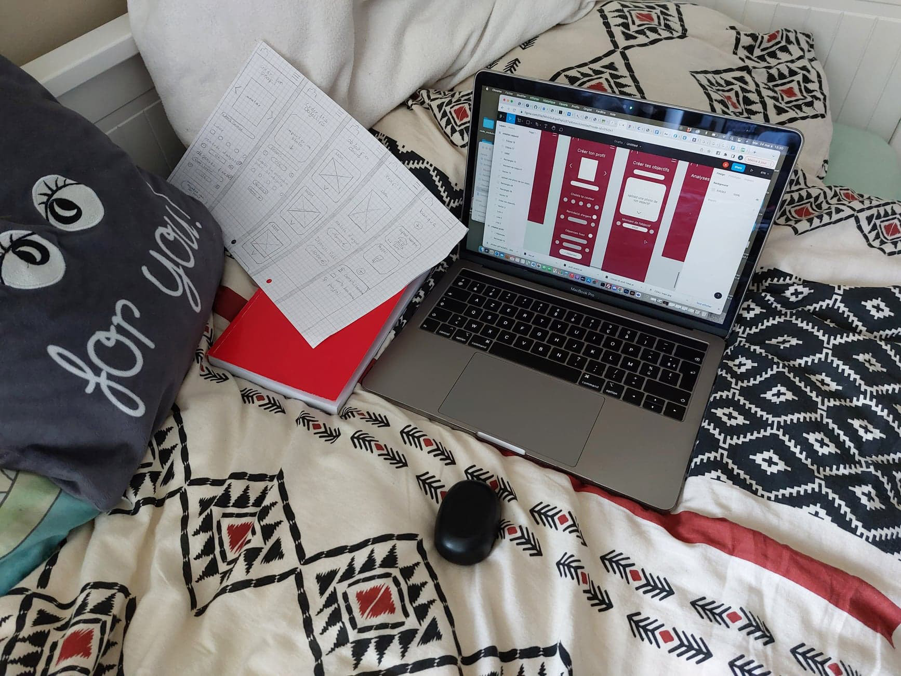
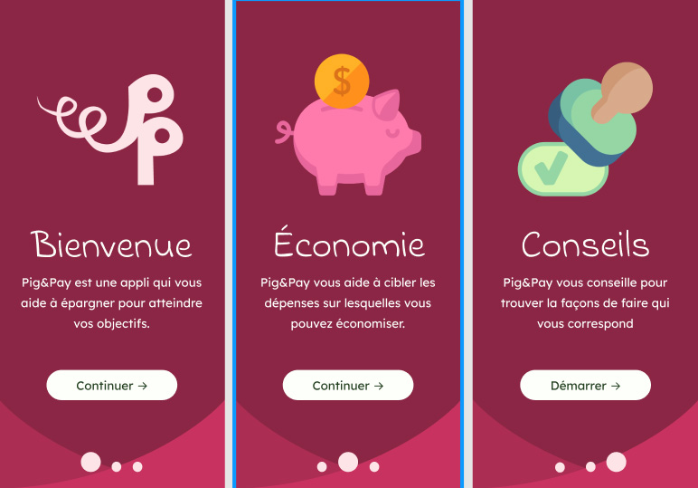

Casestudy Pig&Pay !
L'origine
Ce projet a été motivé par beaucoup de gens de mon entourage qui ont du mal à économiser. Ils regrettent régulièrement des achats alors qu'ils auraient finalement préféré investir différemment leur argent.

Formulaire et interviews
Une fois l'idée trouvée, j'ai commencé par créer un formulaire. Constatation ? Un grand nombre de jeunes, gagnant moins de 500 euros par mois, n’arrive pas à économiser et donc à payer, acheter leurs objectifs. Le plus gros problème étant qu'ils dépensent l’argent qui reste sur leur compte.

Se différencier
En me lançant, il me semblait évident que Pig&Pay aurait une approche différente des applications déjà existantes. Elles me semblent trop axées comptabilité. L'objectif étant de donner envie d'économiser.

Inspiration
En me baladant sur TikTok j'ai découvert un système d'économie par enveloppes; faire une catégorie par type de dépense. Après mon entourage, c'est le deuxième point qui m'a motivé à créer cette application.
Repartir de zéro
J'ai d'abord réalisé des premiers visuels qui ne me plaisaient pas. J'ai donc recommencé en les rendant plus ludique. J’ai également choisi de modifier les couleurs pour rendre le tout plus “joyeux”.

Inspiration jeu
Pour que ça semble plus amusant, j'ai créé un profil où il est possible de choisir son avatar, sa couleur ou encore d'upload une photo de l'objectif d'épargne. Une fois les objectifs d'épargne remplis, j'ai choisi de les représenter sous forme de cartes de jeu.
L’argent
Après avoir commencé à rendre l'appli un peu plus amusante, j'ai réfléchi à la manière dont l'argent pourrait être mis de côté pour éviter que les plus dépensiers ne craquent. Je me suis donc dit "Pourquoi ne pas utiliser l'appli comme un PayPal qui stockerait l'argent jusqu'à ce que l'objectif soit atteint et que donc la personne achète ce qu'elle voulait?". Étant difficile à coder, je me suis dit que ça resterait une chose à faire après la mise en ligne de Pig&Pay.

Le nom
Pour le nom, je suis partie sur quelque chose d’un peu rigolo, Pig&Pay. Pig pour le cochon qui est l’emblème de la tirelire d'économie et pay simplement pour "payer" en anglais.

La typographie
D'un point de vue typographique, je voulais partir sur une police de titre un peu rigolote, d'où la typo manuscrite. Pour les textes, j'ai choisi une écriture neutre pour une lisibilité plus facile.
Le logo
Pour le logo, je suis partie sur les 2P de Pig&Pay, un peu comme PayPal. J'y ai ajouté une queue de cochon en référence à la tirelire et j'ai agrémenté le tout d'une police plus rigolote.

Les couleurs
La couleur prédominante est le rose en référence au cochon. Une touche de vert, la couleur du dollar, est également présente pour faire référence à l'argent. Pig&Pay laisse aux utilisateurs la possibilité de changer de couleurs selon leurs goûts en proposant 5 options différentes.
Tests utilisateurs
Il est ressorti de mes tests utilisateurs qu’il manquait différentes options. Tout d'abord, un bouton pour pouvoir connecter son compte en banque. Le système d’upload de la photo pouvait également être amélioré. Il était trop grand et ne laissait pas la possibilité de prendre une photo en direct.

Il n'était pas possible de s’inscrire, seulement de se connecter.
Il en est également ressorti qu’il serait intéressant d’ajouter une petite analyse des dépenses via des questions. L'objectif étant de faire une page de conseils pour économiser.
Certains noms de boutons ont été changés afin d'être plus claires. Par exemple, un bouton “passer” est devenu "continuer" car il amenait à la page suivante.
A la suite des tests utilisateurs, la page profil a également changé. J’y ai ajouté des informations telles que le nombre d’objectifs déjà atteints et la somme totale épargnée pour la totalité de ceux-ci.
Les user journey
J'ai réalisé 4 user journey. J'ai imaginé des personnes complètement différentes, aux envies et aux besoins complétement différents. Je suis partie de la mère de famille, au jeune travailleur, à l'étudiant en galère jusqu'au père célibataire.

Mes choix
J’ai choisi de créer une page avec des conseils généraux, ainsi qu’une page avec des conseils personnalisés. Ils seront suggérés en fonction des réponses données lors de l’analyse des dépenses. Les utilisateurs auront donc accès à tous les conseils même ceux considérés comme moins utiles.
Le temps
Pig&Pay c’est aussi rentabiliser le temps en travaillant de n’importe où. De la salle d’attente du kiné à la caisse de mon job étudiant, j'ai rentabilisé chaque précieuse minute pour faire avancer le projet.